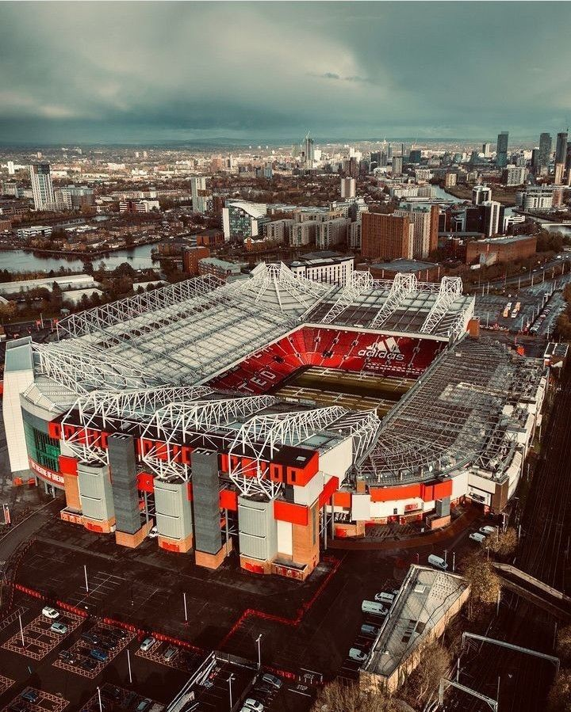

Old Trafford adalah stadion legendaris yang menjadi markas besar klub Manchester United sejak tahun 1910. Dikenal dengan julukan "The Theatre of Dreams" yang diberikan oleh Sir Bobby Charlton, stadion ini bukan sekadar tempat pertandingan, tetapi simbol dari sejarah, tragedi, dan kebangkitan.
Pada tahun 1909, Manchester United memutuskan untuk membangun stadion baru yang lebih besar dan modern. Dengan dana dari presiden klub saat itu, John Henry Davies, arsitek Skotlandia terkenal Archibald Leitch ditunjuk untuk merancang stadion. Old Trafford dibuka secara resmi pada 19 Februari 1910 dengan pertandingan melawan Liverpool — meskipun United kalah 3–4, stadion ini langsung menjadi sorotan karena kemegahannya.
Old Trafford mengalami kerusakan besar akibat serangan bom Jerman pada Perang Dunia II tahun 1941. Akibatnya, Manchester United harus berbagi stadion dengan Manchester City di Maine Road selama hampir satu dekade hingga stadion selesai diperbaiki pada tahun 1949.
Seiring kesuksesan klub, Old Trafford mengalami banyak renovasi besar. Tribun ditinggikan, atap dipasang, dan kapasitas ditingkatkan hingga lebih dari 74.000 penonton. Stadion ini menjadi salah satu venue utama Piala Dunia 1966, Euro 1996, dan final Liga Champions 2003.
Di luar fungsinya sebagai tempat pertandingan, Old Trafford juga menjadi rumah bagi museum klub, patung legenda seperti Sir Alex Ferguson, George Best, Denis Law, dan Bobby Charlton, serta tugu peringatan Tragedi Munich 1958. Stadion ini menjadi tempat ziarah bagi para penggemar dari seluruh dunia.
Old Trafford bukan hanya sebuah bangunan, tapi bagian dari sejarah hidup Manchester United dan para penggemarnya. Setiap sudutnya menyimpan cerita — tentang kemenangan, kekalahan, harapan, dan kejayaan. Selama lebih dari satu abad, stadion ini terus menjadi simbol semangat dan impian, benar-benar menjadikannya "Theatre of Dreams".